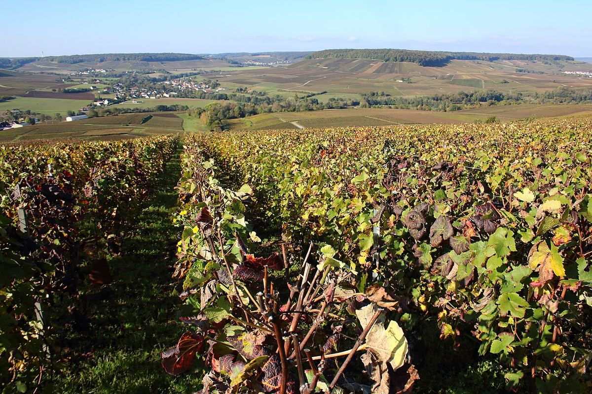

Champagne
Les coteaux, maisons et caves de Champagne, patrimoine mondial : des kilomètres de galeries dans la craie sous Reims et l'avenue de Champagne à Épernay.

Depuis 2015, les « Coteaux, maisons et caves de Champagne » sont inscrits au patrimoine mondial de l'UNESCO. La région, à l'est de Paris, associe vignobles vallonnés, villages vignerons et grandes maisons de Reims et d'Épernay.
Reims
Pendant des siècles, les rois de France furent sacrés à Reims, dans une cathédrale gothique elle aussi inscrite au patrimoine mondial. Sous la ville, d'anciennes carrières de craie (les crayères, dont certaines remontent à l'époque gallo-romaine) ont été transformées en caves où des millions de bouteilles reposent à température constante. Plusieurs grandes maisons les ouvrent au public.
Épernay et les villages
À Épernay, l'avenue de Champagne aligne les hôtels particuliers des grandes maisons, avec des kilomètres de galeries sous leurs fondations. L'abbaye d'Hautvillers, au-dessus de la Marne, abrite la tombe de Dom Pérignon. Les villages de la Montagne de Reims et de la Côte des Blancs permettent de rencontrer de petits vignerons qui élaborent leur propre champagne.
À voir
- Cathédrale de Reims.
- Crayères des maisons de Reims.
- Avenue de Champagne (Épernay).
- Abbaye d'Hautvillers.
Quand partir
Toute l'année (les caves sont souterraines) ; le printemps et les vendanges de septembre pour le vignoble.
Gastronomie
Biscuits roses de Reims, jambon de Reims, chaource.
Conseil
Associez une grande maison et un récoltant-manipulant : deux façons très différentes de faire du champagne.
Domaines de la région dans l'encyclopédie
Celles qui portent la mention « visites » proposent, selon nos informations, des visites ou des activités œnotouristiques.
Informations indicatives. Horaires, tarifs et réservations changent : confirmez-les auprès de chaque domaine ou de l'office de tourisme avant de partir. L'abus d'alcool est dangereux pour la santé ; si vous buvez, ne conduisez pas.